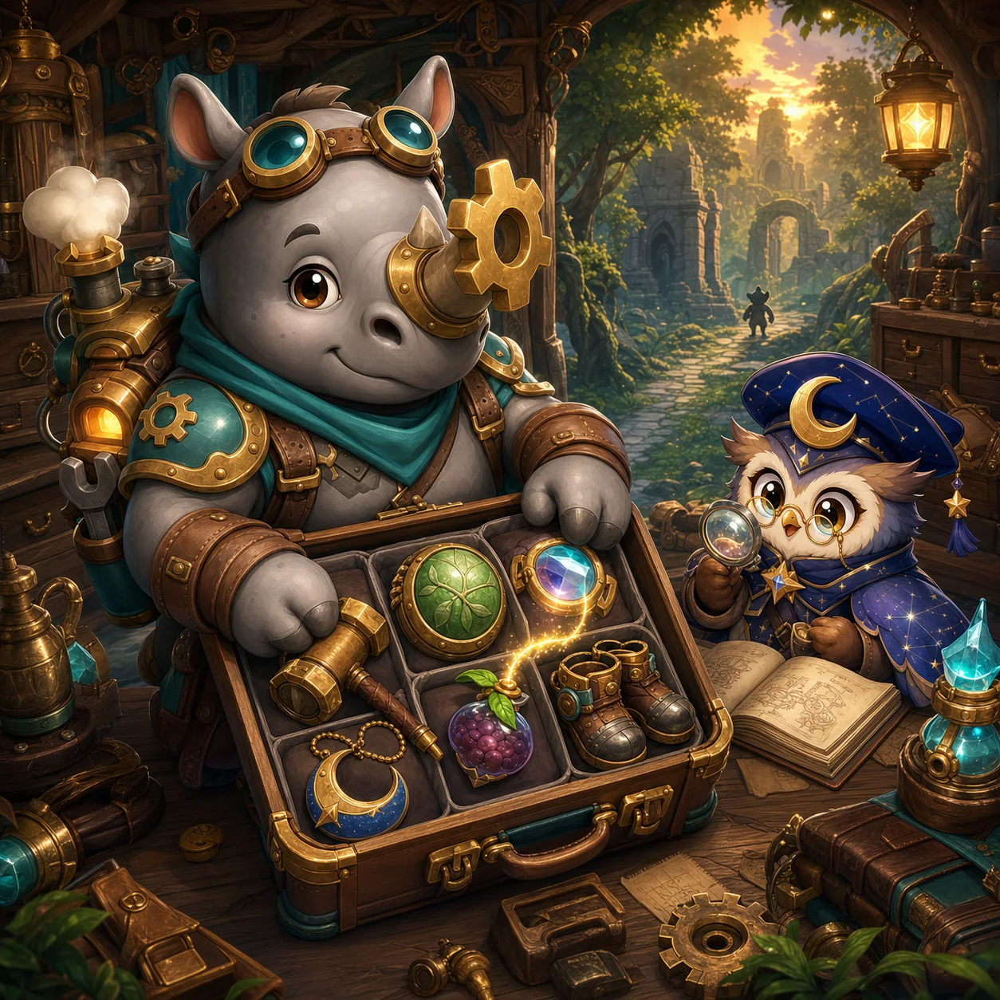
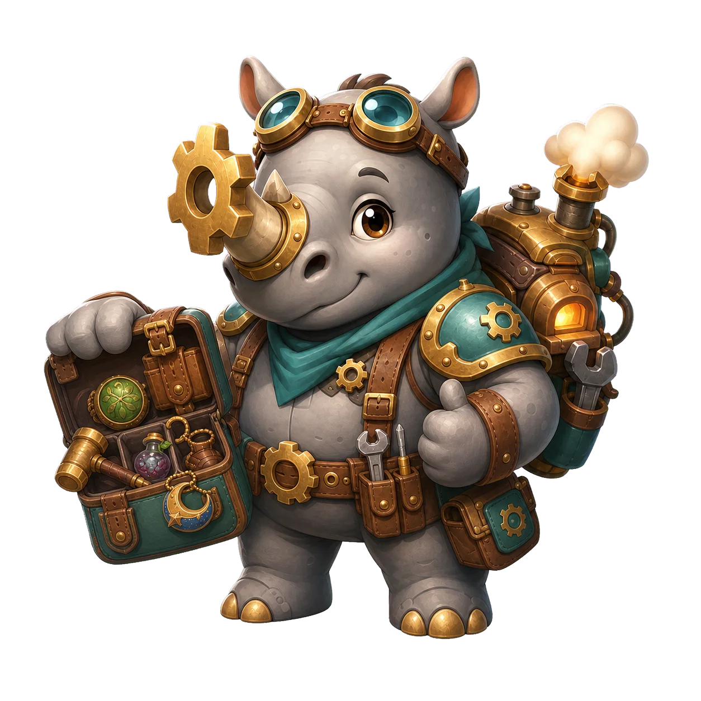

Gearwood Adventure
Animal Gearpack Expedition
Pack equipment, build adjacency combos, and guide Rux through the Gearwood route.
0 / 30 expeditions cleared

Gearwood Adventure
Pack equipment, build adjacency combos, and guide Rux through the Gearwood route.
Animal Gearpack Expedition is a 30-stage spatial-inventory strategy adventure starring Gear Horn Rux. Every expedition asks you to fit equipment into an eleven-column, seven-row travel pack, connect useful material links, and survive five authored encounters. Six regions introduce different packing pressures, and each fifth stage ends with a Guardian whose rule changes how a successful pack is built.
Gearwood's caravan road once carried tools, medicine, crystal lenses, and clockwork parts between six workshops. The route failed when its storage vaults began reacting to the materials inside them. Roots grew across the first trail, moon crystals split the quarry, abandoned machines restarted in Clockwork Hollow, and heat escaped from the Ember Foundry. Storm coils then charged the observatory above the clouds, while the Eclipse Vault sealed the collected cargo behind a final mechanical army.
Gear Horn Rux is the caravan's packmaster. He cannot carry every useful object in a loose pile, so his task is to make a working build from the space available. Forge tools, Nature supplies, Crystal devices, and Moon charms become stronger when matching tags touch. Moon Cap Orla follows the route with a travelling shop, offering new gear when Rux reaches a safe stop. Clearing a stage means reopening one short section of road; defeating the Guardian at Stages 5, 10, 15, 20, 25, and 30 restores an entire region. The final victory over the Eclipse Hoardmaster releases the stored cargo and reconnects all six workshops.
Health persists through the five encounters in one expedition, but the pack can be rebuilt between fights. This makes a short-term defensive item valuable even when it is not part of the final Boss plan. The tray and placed equipment share a twelve-item carrying limit, so taking every reward is not always correct. A full pack can continue without loot, and selling an item returns part of its Gold value.
The pack has eleven columns and seven rows. Equipment shapes range from single-cell charms to long whips and four-cell armor. Rotation changes the shape's orientation but not its statistics. Attack determines Rux's damage, Armor reduces an enemy counterattack, and Heal restores Health before incoming damage is applied. Matching material links add two Attack and one Defense each unless the current enemy suppresses that tag.
Gold belongs only to the current expedition and is earned from encounters or selling equipment. Diamonds are a shared optional currency. At one shop stop, three Diamonds can replace Orla's three offered items after a separate confirmation; the refresh is never required to continue or defeat a Guardian. Workshop XP, discovered item entries, completed stages, and the next unlocked stage are saved locally.
Stages 1-5, Gearwood Trail: the opening route teaches links, rotation, armor, and compact placement. Thorn Fox Ambushers strike before the normal exchange, Ironplate Boars begin behind shields, and Prism Tax Crows punish equipment that touches no matching tag. The Root Guardian regrows Health unless Rux builds an active Nature link.
Stages 6-10, Moonlit Quarry: Moon Veil Moths suppress Moon links and Prism Rams hide behind larger barriers. Mixed materials become safer than relying on one repeated charm. The Crystal Warden adds an eighteen-point prism shield and reflects shards after its core is exposed.
Stages 11-15, Clockwork Hollow: Gear Jackals gain damage as a fight continues, Magnet Beetles add damage for isolated items, and Rustwing Crows corrode Defense after each enemy turn. The Hollow Colossus alternates a braced phase that reduces Rux's strike with a rage phase that strengthens its own counterattack.
Stages 16-20, Ember Foundry: Steam Toads increase corrosion, while Furnace Boars turn occupied cells in the top row into incoming heat damage. Leaving ventilation space can be more valuable than filling every cell. The Furnace Leviathan combines heat and corrosion, so its stage rewards healing, burst damage, and a deliberately open top row.
Stages 21-25, Storm Observatory: Gale Scouts open with fast damage and Coil Lynxes overload the most common material in the pack, disabling those link bonuses. Splitting a build between two materials reduces that risk. The Tempest Archon combines an opening strike with chain-lightning damage for every isolated item.
Stages 26-30, Eclipse Vault: Mimics copy pressure from Rux's strongest combat statistic, while Tag Sealers rotate the disabled material among Forge, Nature, Crystal, and Moon. The Eclipse Hoardmaster joins rotating seals with isolation damage, forcing the final pack to keep several useful link families without leaving loose equipment.
The game uses five encounters per stage so one pack has enough time to change without turning every attempt into a long campaign. Automatic combat keeps attention on the distinctive decision: how shapes, tags, empty cells, and the next enemy rule fit together. The player is never asked to drag tiny objects during an attack. Instead, touch, mouse, and keyboard players receive the same preparation window between enemies.
The 30-stage structure is divided into six rule families rather than one rising statistics curve. New enemies disable familiar shortcuts, and each Guardian checks a different spatial habit: Nature linking, shield breaking, timing around phases, ventilating the top row, removing isolation, or surviving rotating seals. This separates Animal Gearpack Expedition from WeightPlay's direct-action games. Progress comes from learning to rebuild a pack under changing constraints, not from watching a larger number defeat the same encounter.
The game is playable in a modern phone or desktop browser without a basic-play account. Unlocked stages, completed stages, Workshop XP, item discoveries, and best encounter progress are stored in this browser. Clearing browser storage or using another device can remove that local progress. Gold and the current expedition loadout are temporary. Diamonds are optional, require confirmation at Orla's refresh, and do not replace the normal free stage path.
